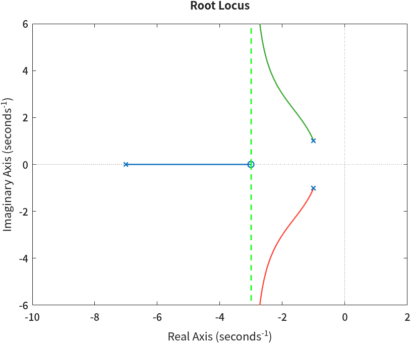
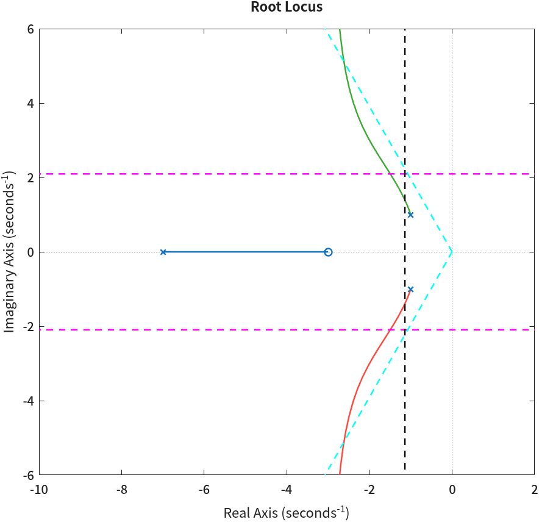
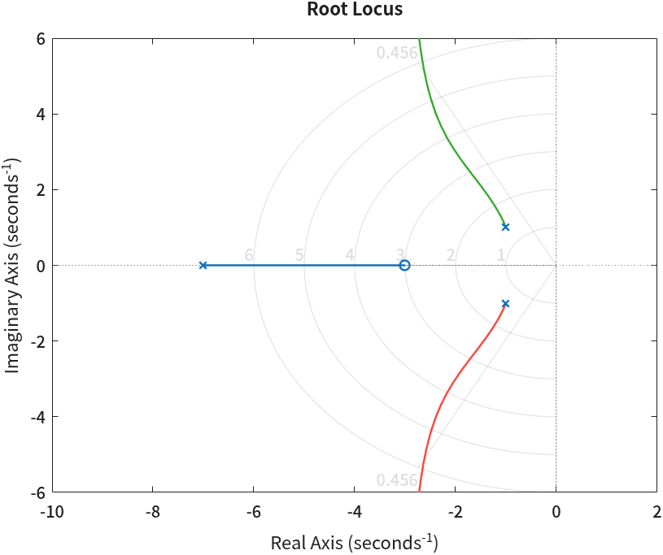
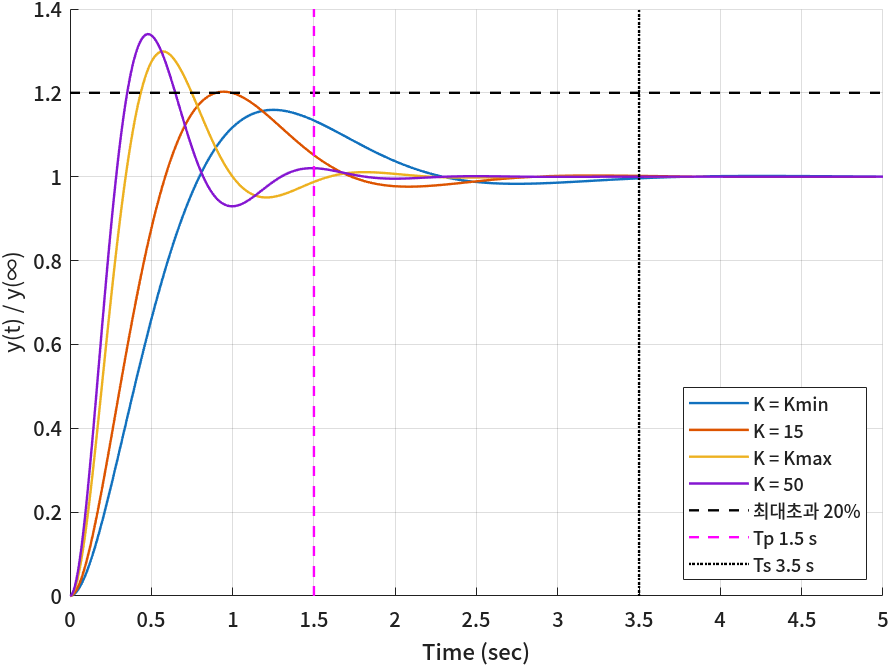

근궤적으로 이득 범위 정하기
- 「첨두시간 1.5초 이하」 같은 시간 사양은 s 평면에서 어떤 영역이 되나?
- 근궤적이 그 영역에 들어오고 나가는 점의 \(K\)는 어떻게 읽나?
- 그렇게 구한 \(K\)로 실제 계단응답을 돌리면 사양을 정말 만족하나?
- 만족하지 않는다면 그 이유는 무엇이고, 설계에서 무엇을 조심해야 하나?
5회에서는 근궤적을 그리고 그 모양을 규칙으로 설명했다. 이 회차는 그 그림을 설계에 쓴다. 사양(최대초과·첨두시간·정착시간)을 s 평면의 경계선으로 바꾸고, 근궤적 중 그 경계 안에 드는 부분의 \(K\)를 고른다.
경계선을 그린 뒤 근궤적이 경계를 지나는 두 점의 \(K\)를 읽으면 범위의 양 끝이 된다. 마지막에는 계단응답을 직접 돌려 그 범위가 사양을 정말 만족하는지 확인한다. 확인해 보면 근사로 구한 범위와 실제 범위가 꽤 다르다 — 이 회차에서 가장 중요한 결과다.
한 장 요약
가운데 열의 식 셋이 사양을 극점 위치로 바꾸는 전부다.
| 사양 | 극점 조건 | s 평면의 경계 | 그리는 함수 |
|---|---|---|---|
| 첨두시간 \(T_p \le 1.5\) s | \(\omega_d \ge \pi / T_p = 2.0944\) | 수평선 \(\mathrm{Im}\,s = \pm\omega_d\) 바깥 | draw_peak_time_line |
| 최대초과 %OS \(\le 20\%\) | \(\zeta \ge 0.4559\) | 음의 실수축에서 \(\theta = 62.87^\circ\) 인 두 직선 안쪽 | draw_overshoot_line |
| 정착시간 \(T_s \le 3.5\) s | \(\sigma \ge 4 / T_s = 1.1429\) | 수직선 \(\mathrm{Re}\,s = -\sigma\) 왼쪽 | draw_settling_time_line |
① 문제 — 사양을 만족하는 \(K\)
이 회차에서 풀 문제는 다음과 같다.
📐 문제
개루프 전달함수 \(G(s)H(s) = \dfrac{s+3}{(s+7)(s^2+2s+2)}\)인 단위 피드백 시스템에서 아래 세 조건을 만족하는 상수 이득 \(K\)의 범위를 구하여라.
- 첨두시간: 1.5초 이하
- 최대초과: 20% 이하
- 정착시간: 3.5초 이하
먼저 5회의 root_locus로 근궤적을 그려 모양을 본다.
s = tf('s');
sys = (s+3)/((s+7)*(s^2+2*s+2)); % 극점 3개, 영점 1개
root_locus(sys, break_point=0, start_angle=0) % 점근선만 겹쳐 그린다
axis([-10 2 -6 6])명령 창 출력
── 근궤적: 극점 3개 · 영점 1개
점근선: 2개, 중심 = -3.0000, 각도 = 90 270 deg
5회 규칙으로 확인해 두자. \(n=3,\ m=1\)이므로 점근선은 두 개(±90°)이고, 중심은 \(\sigma_a = \frac{(-7) + (-1+j) + (-1-j) - (-3)}{2} = -3\)이다. 실수축 구간은 \(-3\)과 \(-7\) 사이뿐이다. 그러니 복소 가지는 \(K\)를 아무리 키워도 실수부가 -3 쪽으로 다가갈 뿐 허수축을 넘지 않는다 — 이 시스템은 모든 \(K>0\)에서 안정하다.
② 2차 시스템의 성능 지표와 극점 위치
사양은 시간 응답에 대한 말이고, 근궤적은 극점 위치에 대한 그림이다. 둘을 이으려면 극점 위치가 응답을 어떻게 정하는지를 식으로 세워야 한다. 표준 2차 시스템에서 출발한다.
$$ T(s) = \frac{\omega_n^2}{s^2 + 2\zeta\omega_n s + \omega_n^2} $$ $$ s = -\zeta\omega_n \pm j\,\omega_n\sqrt{1-\zeta^2} = -\sigma \pm j\,\omega_d $$\(\sigma = \zeta\omega_n\)은 극점의 실수부 크기(감쇠의 빠르기), \(\omega_d = \omega_n\sqrt{1-\zeta^2}\)는 허수부(진동 주파수)다. 극점까지의 거리는 \(\sqrt{\sigma^2 + \omega_d^2} = \omega_n\)이고, 음의 실수축과 이루는 각 \(\theta\)는 \(\cos\theta = \sigma/\omega_n = \zeta\)를 만족한다. 부족제동(\(0<\zeta<1\))일 때 단위계단응답을 역라플라스 변환하면 다음과 같다(4회).
$$ y(t) = 1 - e^{-\sigma t}\left(\cos\omega_d t + \frac{\sigma}{\omega_d}\sin\omega_d t\right) $$첨두시간 \(T_p\)
최댓값은 기울기가 0인 곳에 있다. 위 식을 미분해 정리하면 \(\cos\) 항이 지워지고 \(\sin\) 하나만 남는다.
$$ \dot y(t) = e^{-\sigma t}\,\frac{\sigma^2 + \omega_d^2}{\omega_d}\,\sin\omega_d t = e^{-\sigma t}\,\frac{\omega_n^2}{\omega_d}\,\sin\omega_d t $$\(\sin\omega_d t = 0\)이 되는 첫 양수 시간이 첨두시간이다.
$$ T_p = \frac{\pi}{\omega_d} \qquad\Longrightarrow\qquad T_p \le 1.5 \;\Longleftrightarrow\; \omega_d \ge \frac{\pi}{1.5} = 2.0944 $$허수부가 2.0944보다 큰 극점이어야 한다. s 평면에서는 수평선 \(\mathrm{Im}\,s = \pm 2.0944\)의 바깥쪽이다.
최대초과 %OS
\(t = T_p\)를 \(y(t)\)에 넣으면 \(\cos\pi = -1\), \(\sin\pi = 0\)이다.
$$ y(T_p) = 1 + e^{-\sigma\pi/\omega_d} \qquad\Longrightarrow\qquad \%OS = e^{-\sigma\pi/\omega_d} = e^{-\zeta\pi/\sqrt{1-\zeta^2}} $$사양은 %OS로 주어지므로 이 식을 \(\zeta\)에 대해 푼다. 양변에 로그를 취하고 제곱한다.
$$ \ln(\%OS) = -\frac{\zeta\pi}{\sqrt{1-\zeta^2}} \;\Longrightarrow\; \ln^2(\%OS)\,(1-\zeta^2) = \zeta^2\pi^2 \;\Longrightarrow\; \zeta = \frac{-\ln(\%OS)}{\sqrt{\pi^2 + \ln^2(\%OS)}} $$ $$ \ln 0.2 = -1.6094, \qquad \zeta = \frac{1.6094}{\sqrt{9.8696 + 2.5903}} = \frac{1.6094}{3.5298} = 0.4559, \qquad \theta = \cos^{-1} 0.4559 = 62.87^\circ $$%OS는 \(\zeta\)가 클수록 작아지므로 \(\zeta \ge 0.4559\)여야 한다. \(\cos\theta = \zeta\)이므로 이것은 음의 실수축과 이루는 각이 62.87° 이하라는 뜻이다. s 평면에서는 원점에서 뻗은 두 직선 사이, 실수축 쪽 안쪽이다.
정착시간 \(T_s\)
응답의 진동은 포락선 \(e^{-\sigma t}\) 안에서 줄어든다. 2% 정착시간은 포락선이 0.02까지 줄어드는 시간으로 근사한다.
$$ e^{-\sigma T_s} = 0.02 \;\Longrightarrow\; T_s = \frac{-\ln 0.02}{\sigma} = \frac{3.912}{\sigma} \approx \frac{4}{\sigma} $$ $$ T_s \le 3.5 \;\Longleftrightarrow\; \sigma \ge \frac{4}{3.5} = 1.1429 $$실수부가 -1.1429보다 왼쪽인 극점이어야 한다. s 평면에서는 수직선 \(\mathrm{Re}\,s = -1.1429\)의 왼쪽이다.
세 식을 코드로 옮기면 네 줄이다.
tp = 1.5; % 첨두시간 1.5초 이하
os = 0.20; % 최대초과 20% 이하
ts = 3.5; % 정착시간 3.5초 이하
w_d = pi/tp % 극점 허수부의 하한
zeta = -log(os)/sqrt(pi^2 + log(os)^2) % 제동비의 하한
theta = rad2deg(acos(zeta)) % 음의 실수축에서 잰 각의 상한 (deg)
sigma = 4/ts % 극점 실수부 크기의 하한명령 창 출력
w_d =
2.0944
zeta =
0.4559
theta =
62.8739
sigma =
1.1429출력의 w_d 2.0944, zeta 0.4559, theta 62.8739, sigma 1.1429가 위 식의 숫자와 같다.
⚠️ 각도를 어느 축에서 재나
같은 경계를 asin(zeta)로 허수축에서 잰 각(27.13°)으로 나타내는 경우도 있다.
이 자료의 draw_overshoot_line은 acos(zeta)로 음의 실수축에서 잰 각(62.87°)을 쓴다. \(27.13^\circ + 62.87^\circ = 90^\circ\)이라 같은 직선이다.
식을 옮겨 쓸 때 어느 축 기준인지 섞이면 직선이 엉뚱한 곳에 그어진다. 교재는 대부분 음의 실수축 기준(\(\cos\theta = \zeta\))이다.
③ s 평면에 경계선 그리기
경계선을 그리는 일은 7회에서도 반복되므로 함수 파일 셋으로 만들어 두었다. 셋 다 앞 식을 계산하고, 값을 찍고, plot으로 선을 긋는다.
현재 그림 위에 겹쳐야 하므로 부르기 전에 hold on이 걸려 있어야 한다.
function [zeta, theta] = draw_overshoot_line(os, style)
% 최대초과 os 를 만족하는 경계선 두 개를 s 평면에 그린다 (6회).
% os 최대초과 비율 (0.2 = 20%)
% style 선 모양 ('b--' 등)
% 이 선보다 실수축 쪽(안쪽)에 있는 극점은 최대초과가 os 보다 작다.
% 그리기 전에 hold on 이 걸려 있어야 앞의 그림이 지워지지 않는다.
zeta = -log(os) / sqrt(pi^2 + log(os)^2); % %OS 식을 zeta 에 대해 푼 것
theta = acos(zeta); % 음의 실수축에서 잰 각도
fprintf('%%OS = %.1f%%, zeta = %.4f, theta = %.2f deg\n', os*100, zeta, rad2deg(theta))
L = 100; % 화면 밖까지 충분히 긴 선
plot([0 -L*cos(theta)], [0 L*sin(theta)], style)
plot([0 -L*cos(theta)], [0 -L*sin(theta)], style)
endfunction w_d = draw_peak_time_line(tp, style)
% 첨두시간 tp 를 만족하는 경계선(수평선 두 개)을 s 평면에 그린다 (6회).
% Tp = pi / w_d 이므로, 허수부가 pi/tp 보다 큰 극점은 첨두시간이 tp 보다 짧다.
w_d = pi / tp;
fprintf('Tp = %.4f s, 허수부 w_d = %.4f rad/s\n', tp, w_d)
L = 100;
plot([-L L], [ w_d w_d], style)
plot([-L L], [-w_d -w_d], style)
endfunction sigma_d = draw_settling_time_line(ts, style)
% 정착시간 ts 를 만족하는 경계선(수직선 하나)을 s 평면에 그린다 (6회).
% Ts = 4 / sigma (2% 기준) 이므로, 실수부가 -4/ts 보다 왼쪽인 극점은 정착시간이 ts 보다 짧다.
sigma_d = 4 / ts;
fprintf('Ts = %.4f s, 실수부 -sigma_d = %.4f\n', ts, -sigma_d)
L = 100;
plot([-sigma_d -sigma_d], [-L L], style)
end🆕 이 코드에서 처음 나오는 것
- acos(x)
- 역코사인. 라디안으로 준다. 여기서는 \(\cos\theta = \zeta\)에서 \(\theta\)를 구했다. 역사인은
asin이다. - fprintf('%%OS = …')
fprintf의 서식 문자열에서%는 서식 기호의 시작이다. 글자%자체를 찍으려면%%로 두 번 쓴다.
이 세 함수로 근궤적 위에 경계를 긋는다. 세 조건을 모두 만족하는 영역은 수직선의 왼쪽, 수평선의 바깥(위·아래), 최대초과 직선의 안쪽이 겹치는 곳이다.
rlocus(sys)
hold on
[zeta, theta] = draw_overshoot_line(os, 'c--');
w_d = draw_peak_time_line(tp, 'm--');
sigma_d = draw_settling_time_line(ts, 'k--');
hold off
axis([-10 2 -6 6])명령 창 출력
%OS = 20.0%, zeta = 0.4559, theta = 62.87 deg
Tp = 1.5000 s, 허수부 w_d = 2.0944 rad/s
Ts = 3.5000 s, 실수부 -sigma_d = -1.1429
④ sgrid — 내장 격자
MATLAB에는 같은 일을 하는 내장 함수가 있다. sgrid는 근궤적 위에 제동비가 일정한 직선과 고유주파수가 일정한 반원을 그어 준다.
최대초과 조건(제동비)을 볼 때 쓰기 좋다.
rlocus(sys)
sgrid(zeta, 1:6) % 제동비 zeta 인 직선 + 고유주파수 1~6 rad/s 인 반원
axis([-10 2 -6 6])🆕 이 코드에서 처음 나오는 것
- sgrid(zeta, wn)
- 현재 근궤적(또는 극점-영점) 그림 위에 제동비
zeta인 직선과 고유주파수wn인 반원을 회색으로 그린다. 둘 다 벡터로 여러 개를 줄 수 있다. 여기서는 ②절의 \(\zeta = 0.4559\) 직선 한 쌍과 \(\omega_n = 1, \dots, 6\) 반원을 그렸다.wn에 0을 넣으면 R2026b에서는 「양수여야 한다」는 오류가 난다.

sgrid는 첨두시간(수평선)과 정착시간(수직선) 경계는 그리지 않으므로, 세 조건을 다 보려면 ③절의 함수가 필요하다.⑤ 그림에서 \(K\) 읽기 — rlocfind
③절 그림에서 위쪽 가지는 자홍 수평선을 넘는 순간 영역에 들어오고, 청록 직선을 넘는 순간 나간다. 그 두 점의 \(K\)가 범위의 양 끝이다. 그림을 확대해 보면 두 점은 대략 \(-1.50 + j2.10\)(수평선 바로 위)과 \(-2.62 + j5.11\)(직선 위)이다.
MATLAB 그림 창에서 근궤적 위를 클릭하면 데이터 팁이 떠서 그 점의 Gain(\(K\)), Pole, Damping, Overshoot, Frequency를 보여 준다.
다만 클릭은 화면 해상도와 손에 따라 값이 흔들린다. rlocfind에 점을 주면 그 점에 가장 가까운 근궤적 위의 점과 그때의 \(K\)를 코드로 구해 준다.
% 그림에서 읽은 두 경계점 — 그 점에 가장 가까운 근궤적 위의 K 를 구한다
[Kmin, p1] = rlocfind(sys, -1.50 + 2.10j) % 자홍 수평선(첨두시간)과 만나는 점 — 선 바로 위
[Kmax, p2] = rlocfind(sys, -2.62 + 5.11j) % 청록 직선(최대초과)과 만나는 점명령 창 출력
Kmin =
8.6555
p1 =
-6.0014 + 0.0000i
-1.4993 + 2.1004i
-1.4993 - 2.1004i
Kmax =
36.6782
p2 =
-2.6192 + 5.1101i
-2.6192 - 5.1101i
-3.7617 + 0.0000i🆕 이 코드에서 처음 나오는 것
- [K, poles] = rlocfind(sys, p)
- 점
p에 가장 가까운 근궤적 위의 점을 찾아 그 이득K와, 그 \(K\)에서의 폐루프 극점 전부(poles)를 준다.p를 빼고rlocfind(sys)로 부르면 그림에서 마우스로 점을 고르게 한다. 여기서는 그림에서 읽은 두 경계점을 넣었다.
\(K_{\min} = 8.66\)에서 우세극점은 \(-1.4993 + j2.1004\)로 허수부가 2.0944보다 조금 크다 — 첨두시간 경계 바로 안쪽이다. \(K_{\max} = 36.68\)에서는 \(-2.6192 + j5.1101\)이고, 제동비가 \(2.6192 / \sqrt{2.6192^2 + 5.1101^2} = 2.6192/5.7423 = 0.456\)으로 최대초과 경계에 놓인다. 두 점 모두 실수부가 1.1429보다 크니 정착시간 조건은 범위를 정하는 데 끼지 않는다. 우세극점 근사로 구한 범위는 \(8.66 \le K \le 36.68\)이다.
⑥ 계단응답으로 확인 — stepinfo
설계한 범위가 정말 사양을 만족하는지는 계단응답을 직접 돌려 봐야 안다. 범위의 양 끝, 가운데 하나, 범위 밖 하나를 골라 4회의 stepinfo로 잰다.
Ks = [Kmin, 15, Kmax, 50];
for K = Ks
T = feedback(K*sys, 1);
S = stepinfo(T);
fprintf('K = %5.2f : Tp = %.3f s, %%OS = %5.2f %%, Ts = %.3f s\n', ...
K, S.PeakTime, S.Overshoot, S.SettlingTime)
end
t = 0:0.01:5;
hold on
for K = Ks
T = feedback(K*sys, 1);
y = step(T, t);
plot(t, y/dcgain(T)) % 최종값으로 나눠 1 에 맞춘다
end
plot([0 5], [1.2 1.2], 'k--', [tp tp], [0 1.4], 'm--', [ts ts], [0 1.4], 'k:')
hold off
legend('K = Kmin', 'K = 15', 'K = Kmax', 'K = 50', '최대초과 20%', 'Tp 1.5 s', 'Ts 3.5 s', 'Location', 'southeast')
xlabel('Time (sec)'); ylabel('y(t) / y(\infty)'); grid on명령 창 출력
K = 8.66 : Tp = 1.243 s, %OS = 15.94 %, Ts = 2.113 s
K = 15.00 : Tp = 0.951 s, %OS = 20.27 %, Ts = 2.271 s
K = 36.68 : Tp = 0.580 s, %OS = 29.85 %, Ts = 1.452 s
K = 50.00 : Tp = 0.486 s, %OS = 33.98 %, Ts = 1.517 s결과가 예상과 다르다. \(K_{\min} = 8.66\)은 세 사양을 다 만족한다. 그런데 범위 한가운데의 \(K = 15\)에서 이미 최대초과가 20.27%로 사양을 넘고, \(K_{\max} = 36.68\)에서는 29.85%다. 우세극점으로는 \(K_{\max}\)에서 정확히 20%여야 했다.

🆕 이 코드에서 처음 나오는 것
- plot(t, y/dcgain(T))
- 이 시스템은 0형이라(개루프 분모에 \(s\)가 없다) 계단응답의 최종값이 1이 아니다. 예를 들어 \(K=15\)면 \(\frac{15\cdot 3/14}{1+15\cdot 3/14} = 0.763\)이다.
dcgain(4회)으로 나눠 네 응답을 같은 눈금에서 비교했다.stepinfo의 Overshoot도 최종값 기준이라 이 그림의 1.2와 같은 뜻이다. - legend(…, 'Location', 'southeast')
- 범례를 그림의 오른쪽 아래에 둔다. 곡선을 가리지 않는 자리를 고를 때 쓴다.
그렇다면 실제로 세 사양을 다 만족하는 \(K\)는 어디까지인가? 우세극점 근사 없이, \(K\)마다 계단응답을 돌려 직접 잰다.
% 우세극점 근사 없이, K 마다 계단응답을 실제로 돌려 세 사양을 직접 잰다
Kfine = 1:0.05:60;
pass = false(size(Kfine));
for k = 1:numel(Kfine)
S = stepinfo(feedback(Kfine(k)*sys, 1));
pass(k) = S.PeakTime <= tp && S.Overshoot <= os*100 && S.SettlingTime <= ts;
end
K_ok = Kfine(pass);
fprintf('실제 응답으로 세 사양을 모두 만족하는 K: %.2f ~ %.2f\n', min(K_ok), max(K_ok))
fprintf('그 사이가 끊기지 않았나: %d\n', all(pass(Kfine >= min(K_ok) & Kfine <= max(K_ok))))명령 창 출력
실제 응답으로 세 사양을 모두 만족하는 K: 5.75 ~ 14.50
그 사이가 끊기지 않았나: 1🆕 이 코드에서 처음 나오는 것
- pass = false(size(Kfine))
Kfine과 같은 크기로, 전부 거짓(0)인 참·거짓 배열을 만든다. \(K\)마다 「세 사양을 다 만족했나」를 적어 둘 칸이다.- a && b
- 둘 다 참이면 참(AND). 값 하나짜리 조건을 이을 때 쓴다. 여기서는 첨두시간·최대초과·정착시간 조건을 한 줄로 묶었다.
- K_ok = Kfine(pass)
- 논리 인덱싱. 참·거짓 배열을 인덱스로 주면 참인 자리의 원소만 골라 준다. 여기서는 세 사양을 만족한 \(K\)만 모았다.
- all(x)
- 모든 원소가 참이면 1(4회). 여기서는 범위의 양 끝 사이에 사양을 못 맞춘 \(K\)가 끼어 있지 않은지 확인했다.
| \(K_{\min}\) | \(K_{\max}\) | 무엇이 끝을 정했나 | |
|---|---|---|---|
| 우세극점 근사 (⑤절) | 8.66 | 36.68 | \(\omega_d\) 경계 · \(\zeta\) 경계 |
| 실제 계단응답 | 5.75 | 14.50 | 실제 첨두시간 · 실제 최대초과 |
⑦ 우세극점 근사가 어긋나는 이유
②절의 식은 극점이 두 개뿐이고 영점이 없는 시스템의 식이다. 이 시스템의 폐루프에는 그 밖에 두 가지가 더 있다.
$$ T(s) = \frac{K(s+3)}{(s+7)(s^2+2s+2) + K(s+3)} $$- 셋째 극점 — 분모가 3차라 실수 극점이 하나 더 있다. -7에서 출발해 영점 -3 쪽으로 간다.
- 영점 \(-3\) — 개루프 영점은 단위 피드백 폐루프에도 그대로 영점으로 남는다(분자 \(K(s+3)\)).
근사가 얼마나 어긋나는지 \(K\)마다 비교한다.
% 우세극점 두 개만 보고 예측한 성능과 stepinfo 가 잰 실제 성능을 맞대 본다
for K = [Kmin, 10, 20, 30, Kmax]
p = pole(feedback(K*sys, 1));
[~, i] = max(imag(p));
pdK = p(i);
third = p(abs(imag(p)) < 1e-9); % 실수 극점 (세 번째 극점)
zK = -real(pdK)/abs(pdK);
OS_pred = 100*exp(-zK*pi/sqrt(1 - zK^2));
S = stepinfo(feedback(K*sys, 1));
fprintf('K = %5.2f | 셋째 극점 %6.3f | %%OS 예측 %5.2f / 실제 %5.2f | Tp 예측 %.3f / 실제 %.3f | Ts 예측 %.3f / 실제 %.3f\n', ...
K, third, OS_pred, S.Overshoot, pi/imag(pdK), S.PeakTime, 4/(-real(pdK)), S.SettlingTime)
end명령 창 출력
K = 8.66 | 셋째 극점 -6.001 | %OS 예측 10.62 / 실제 15.94 | Tp 예측 1.496 / 실제 1.243 | Ts 예측 2.668 / 실제 2.113
K = 10.00 | 셋째 극점 -5.837 | %OS 예측 10.93 / 실제 16.98 | Tp 예측 1.400 / 실제 1.168 | Ts 예측 2.529 / 실제 1.982
K = 20.00 | 셋째 극점 -4.688 | %OS 예측 13.14 / 실제 22.98 | Tp 예측 0.941 / 실제 0.806 | Ts 예측 1.855 / 실제 1.999
K = 30.00 | 셋째 극점 -4.000 | %OS 예측 17.08 / 실제 27.41 | Tp 예측 0.707 / 실제 0.645 | Ts 예측 1.600 / 실제 1.621
K = 36.68 | 셋째 극점 -3.762 | %OS 예측 19.98 / 실제 29.85 | Tp 예측 0.615 / 실제 0.580 | Ts 예측 1.527 / 실제 1.452출력을 줄마다 읽으면 두 가지가 보인다. 첫째, 실제 %OS가 예측보다 5~10%p 크고, 실제 \(T_p\)가 예측보다 짧다. 영점 \(-3\)의 효과다. 폐루프 영점은 응답에 그 응답의 미분을 더하는 효과를 내서(\((s+3)Y = sY + 3Y\)), 응답을 일찍 솟게 하고 더 넘치게 만든다. 영점이 우세극점(실수부 -1.5 ~ -2.6)과 가까울수록 효과가 크다.
둘째, 셋째 극점이 우세극점에서 충분히 멀지 않다. 흔히 쓰는 기준은 「셋째 극점의 실수부가 우세극점 실수부의 5배 이상 왼쪽」인데, \(K_{\min}\)에서는 \(6.001 / 1.499 = 4.0\)배, \(K_{\max}\)에서는 \(3.762 / 2.619 = 1.4\)배다. 셋째 극점이 영점 -3에 다가가며 부분적으로 상쇄되기는 하지만 완전히 지우지는 못한다.
📐 이론과 잇기 — 2차 근사를 믿어도 되는 조건
교재는 2차 근사를 쓰기 전에 두 가지를 확인하라고 한다. ① 나머지 극점이 우세극점보다 (실수부 기준) 약 5배 이상 왼쪽에 있는가.
② 영점이 우세극점에서 멀리 있거나, 가까운 극점과 거의 같은 자리에 있어 서로 상쇄되는가. 이 문제는 둘 다 충분히 만족하지 않는다.
그래서 7회의 설계에서도 마지막 단계는 언제나 step과 stepinfo로 확인하는 것이다.
🧪 실습
사양을 바꿔 \(K\) 범위를 다시 구하기
이걸 해 보면 사양 하나가 s 평면 경계 하나를 움직이고, 그것이 \(K\) 범위의 한쪽 끝을 움직인다는 것이 손에 익는다.
b02_specs의 사양을 \(T_p \le 1.2\) s, %OS \(\le 15\%\), \(T_s \le 3\) s로 바꾸고 ②절의 식으로 \(\omega_d\), \(\zeta\), \(\sigma\)를 손으로 구한다 (8분)b03_region을 다시 돌려 세 경계선이 어느 쪽으로 움직이는지, 근궤적이 지나는 구간이 어떻게 줄어드는지 본다 (3분)- 그림에서 근궤적이 새 경계선을 지나는 두 점을 읽고
rlocfind로 \(K\) 범위를 구한다. 근궤적이 영역을 지나지 않으면 그 사양은 이 구조로 만족할 수 없다는 뜻이다 (5분) b07_actual_range로 실제 범위를 구하고 두 범위를 비교한다 (5분)
이렇게 되면 성공이다: 손으로 구한 \(\omega_d\)·\(\zeta\)·\(\sigma\)가 draw_* 함수가 찍는 값과 같고, 근사 범위와 실제 범위가 어떻게 다른지 한 줄로 설명할 수 있다.
📝 연습문제
- %OS = 10%일 때 \(\zeta\)와 \(\theta\)를 손으로 구하고
draw_overshoot_line(0.1, 'b--')의 출력과 비교하시오. - \(G(s)H(s) = \dfrac{1}{s(s+4)(s+6)}\)에서 %OS \(\le 16\%\), \(T_s \le 4\) s를 만족하는 \(K\) 범위를 ③·⑤절 방법으로 구하시오. 이 시스템에서는 어느 조건이 아래 끝을 정하는가?
- 2번의 범위 양 끝에서
stepinfo를 돌려 실제로 사양을 만족하는지 확인하고, 이 회차의 예와 결과가 어떻게 다른지 영점 유무로 설명하시오.
✅ 점검
조금 더 알아두면
Control System Designer. controlSystemDesigner(sys)를 치면 근궤적·계단응답·보드 선도를 한 창에 띄우고,
근궤적 위의 극점을 마우스로 끌면 응답이 바로 바뀌는 도구가 열린다. 설계 영역도 메뉴에서 그릴 수 있다. 감을 잡는 데는 좋지만, 보고서에는 이 회차처럼 숫자를 코드로 남기는 것이 좋다.
정착시간의 기준. 이 자료는 2% 기준(\(4/\sigma\))을 썼다. 5% 기준이면 \(-\ln 0.05 = 3.0\)이라 \(T_s \approx 3/\sigma\)다.
stepinfo의 기본도 2%이고, stepinfo(T, 'SettlingTimeThreshold', 0.05)로 바꿀 수 있다.
상승시간. 4회의 transient_response가 쓴 상승시간 근사 \(T_r \approx (0.8 + 2.5\zeta)/\omega_n\)도 사양으로 줄 수 있다.
이 조건은 s 평면에서 \(\omega_n\)(원점에서의 거리)과 \(\zeta\)가 섞인 곡선이 되어 직선 하나로 그려지지 않는다. 그런 사양은 ⑥절의 b07_actual_range처럼 \(K\)마다 응답을 재서 검사하는 방법이 편하다.